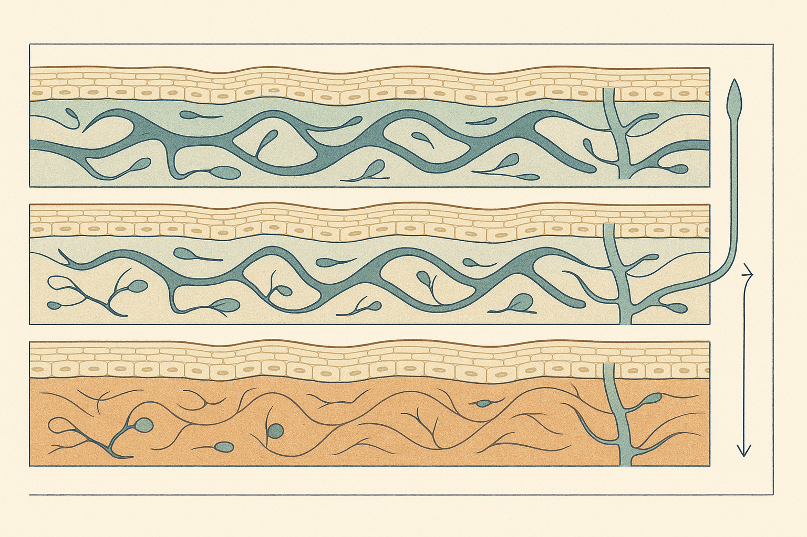
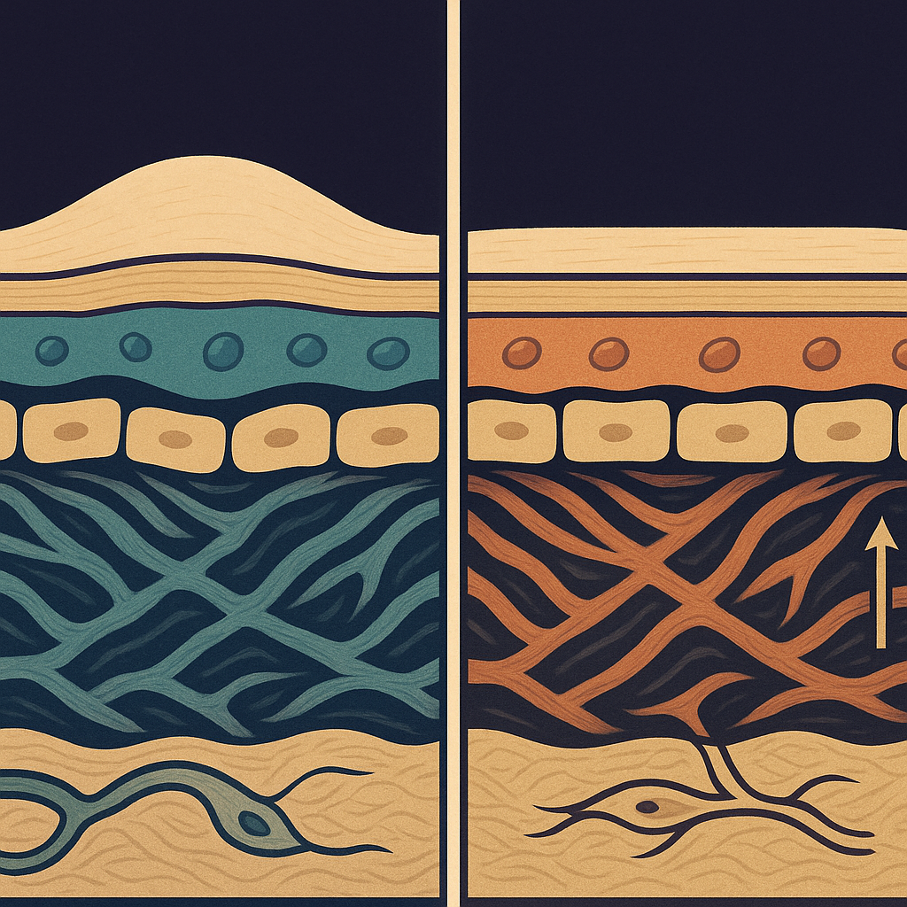
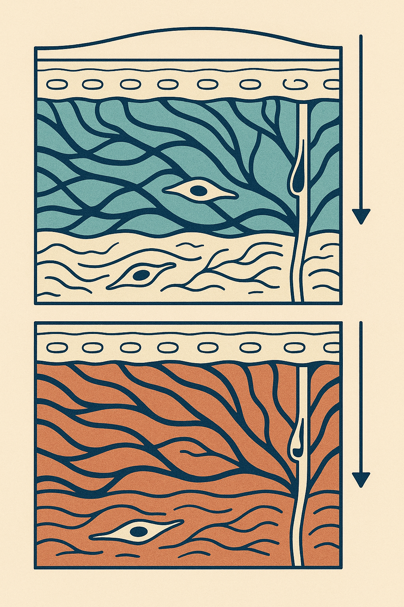

Review below. Reply approve to publish the Facebook post, or tell me edits.

There is a free test that sorts this out, and the answer is in the clock: fluid resolves in the first two to three hours of being upright, volume and laxity do not. The face you see at 7am and the face you see at 7pm are not the same face, and most people judge their skin, and buy things for it, at the worst possible hour of the day.
Skin is not a solid. Between the collagen bundles of your dermis sits a watery medium with a proper name: interstitial fluid. Stripped of the jargon, it is the water that lives between the fibres, and your face has a large, loose, low-pressure space for it to spread into.
Here is the plumbing. Your blood delivers fluid to the tissue constantly. The veins reclaim most of it. What they leave behind is collected by tiny blind-ended lymphatic vessels, threadlike channels that drain toward your neck. And here is the part almost nobody tells you: that return system has no strong pump. The heart drives your blood. Nothing equivalent drives your lymph. It relies on posture, movement, the squeeze of the muscles around it, and a helpful nudge from gravity.
Think of a floodplain, not a bucket. Overnight, water spreads out across a wide flat space. Once the ground tilts again, it drains along shallow channels. Slowly.
So when you lie horizontal for eight hours, you remove the gravity assist that quietly helps empty those channels all day. Fluid settles into the loosest tissue available, which happens to be your face, and especially around the eyes.
Then there are the ordinary amplifiers. A salt-heavy dinner. Alcohol. A short or broken night. Crying. Hayfever season. A heavy cold. And for those still cycling, the natural dip and rise of hormones through the month shifts fluid retention too. None of this is a flaw in your skin. It is physics and physiology doing exactly what they always do.
This is the useful part, and it costs nothing.
> The three-hour test. Look at the same spot on your face, in the same light, at two times: right when you wake, and again after roughly three hours of being upright. > > - Fluid resolves noticeably in the first two to three hours of being vertical. If the fullness eases by mid-morning, that was water. > - Volume loss (deflated fat compartments, hollows at the boundaries) looks the same at 7am and 7pm. Time upright changes nothing. > - Laxity changes with head position, not with time. It looks better when you lie back and worse when you lean forward over your phone. The mirror-above-you test and the mirror-below-you test give different faces. > > Three different things. Three different answers. Only one of them is water.
Screenshot that test and run it tomorrow morning. It is far more useful sitting in your camera roll than half-remembered at the bathroom mirror.
Why does this matter? Because these three things get sold the same fixes, and they should not be. A cream marketed at "puffiness" cannot do anything for volume loss. A sculpting tool cannot do anything for laxity. Knowing which one you are actually looking at is worth more than most of the products aimed at it.
Graded honestly, most useful first.
Getting upright and moving. This is the actual mechanism. Standing, walking, and the normal muscle activity of a morning are what drain the facial floodplain. It is free, and everything else on this list is a minor accelerant of it.
Cold and light massage toward the neck. Yes, these do something. Cool temperatures constrict the small vessels and slow fresh fluid arriving; gentle strokes in the direction of the neck help move what is already there. But be clear about the timescale: the effect lasts minutes to hours, because you are moving water, not changing structure. A "sculpted" jawline at 8:15am is a redistributed one, not a rebuilt one. That is not a scam exactly, but it is also not what the marketing photos imply.
Sleeping slightly elevated. An extra pillow helps some people, for the obvious gravitational reason.
Less salt and less alcohol the night before. Helps most people, and costs less than any tool.
LED masks, ours included. Last, because the honest answer is nothing. Light does not move fluid. Our mask does nothing for morning puffiness: not a little bit, not indirectly. Any device sold to you on a de-puffing promise is largely selling you the effect of standing up for three hours, which you were going to do anyway.
Notice what is also not on that list: anything that builds collagen. Nothing here does. Moving fluid and building structure are entirely different jobs.
One more thing before any of this becomes a shopping question. Puffiness that is one-sided, sudden or painful, that does not settle by midday, or that arrives with breathlessness, swollen ankles or eyelid swelling is a doctor conversation, not a skincare one. Thyroid, kidney, cardiac and allergic causes all exist, and a GP can tell them apart. We are not going to pretend a light mask is the answer to any of them.
Not water over hours. Skin quality over weeks. Red light therapy at home is a slow, gentle habit aimed at the appearance of tone and fine lines, closer to flossing or sunscreen than to a facial. Ten minutes a day, most days, is the whole protocol. It is a cosmetic device, not medicine, and daily SPF still does more for your skin's longevity than anything we sell.
In studies of similar devices, users typically report the look of radiance and evenness shifting first, over a week or two rather than a morning. Any softening in the appearance of fine lines is reported later again, after a couple of months of consistent use, and it is subtle. Expect gradual. Expect to need photos taken in the same light to see it at all. Redermis is new, we do not have a wall of reviews yet and we are not going to invent any, so judge that timeline against everything above rather than against us.
Judge your face at 10am, not 7am. It is a fairer hour, and a cheaper one.
So which of the three are you dealing with: fluid, volume or laxity? If you ever want to see what we sell and exactly what we claim for it, the mask and the full spec are here.

Your 7am face and your 7pm face are two different faces. Here is the free test that tells you which one is real.
Get up, stay upright, and check the mirror again mid-morning. Overnight fluid settles within the first two to three hours upright. If the fullness drains, that was water. If it looks identical at 7am and 7pm, that is volume loss. And if it changes when you tilt your head, not with the clock, that is laxity. Three different things, three different conversations.
We sell a light mask. It does nothing for this. Light does not move fluid, and anything sold to you on a de-puffing promise is charging you for the effect of standing up.
Think of your face overnight like a drain that only runs when you are upright. Lying flat for eight hours makes your face the lowest point in the house. So the honest grading goes: getting up and moving is the real mechanism. Cold and light massage toward the neck do work, but for minutes to hours, because you are moving water, not changing structure. Salt, alcohol and a short night are the usual amplifiers.
One caveat: puffiness that is one-sided, sudden, or still there by midday is a question for your GP, not a skincare brand.
We are new and still earning reviews, so take this as education first. What our mask is actually for is slower and duller than a de-puffing promise: ten minutes a day, supporting the look of tone and fine lines over weeks. A cosmetic device, not medicine.
Is your face a different shape at 7am than at 7pm? Genuinely curious how many people notice it.
#SkinScience #MorningPuffiness #RedLightTherapy
FIRST COMMENT (publish immediately after the post, keep the link out of the body): If you ever want a closer look at what we make, it is here: https://redermis.com.au/products/red-light-therapy-face-neck-mask
IMAGE PROMPT: Editorial science illustration in the style of Scientific American / New Scientist: exactly two equal panels either side of one thin vertical ivory rule, the same skin specimen drawn twice, only the fluid state differing. Left panel, 7am: the dermal collagen bundles pushed apart by wide pools of cool teal interstitial fluid, the skin surface contour above domed and taut, a blind-ended lymphatic capillary at the panel margin drawn slack and overfull, and one small horizontal vector at the outer margin. Right panel, three hours upright: the identical collagen bundles back in contact with no free fluid anywhere, the surface contour flat, the tissue warm terracotta, the lymphatic capillary open and draining through its one-way valve, and one small vertical vector at the outer margin. Histology locked and identical in construction in both panels: flattened corneocytes at the top, two to three rows of nucleated epidermal cells one nucleus per cell, a fine basement membrane line, dermis as a felt-like mat of wavy interlacing collagen (never honeycomb, never hexagons, never rope, wicker or twine), exactly one spindle-shaped fibroblast with a nucleus and two tapering processes, exactly one capillary loop. Push the cool-teal to warm-terracotta contrast hard so the before and after reads instantly at 150 pixels wide in a cold feed. Both panels complete and fully inside the frame with even margins, nothing bleeding off the edges, nothing rising above the skin surface line. Deep plum-indigo ground, fine ivory linework, cool teal left, warm terracotta right. Flat, structured, diagrammatic, legible. No single central object, no buds, no pods, no seed shapes, no leaves, no scales, no roots, no branches, no twigs, no botanical forms, no halos, no starbursts, no radiating rays, no icons, no product, no device, no mask, no person, no face, no hands, no text, no letters, no numerals, no logos.

Gravity spent eight hours off duty. That is your 7am face, not ageing.
Overnight, fluid pools where you slept, and it takes a couple of hours upright to find its way back out.
Honesty first: we sell a light mask, and it does nothing for puffiness. Light does not move fluid.
How to tell what is what:
Fluid settles in the first two to three hours upright. If it fades by mid-morning, that was water.
Volume loss looks the same at 7am and 7pm. Time does not drain.
Loose skin changes with head position, not with the hour. Tilt down at a mirror and you will see it.
Cold spoons, ice rollers, massage: they do work. For hours, not for structure.
Salt, alcohol and a short night are the usual culprits behind a puffier morning.
Puffiness that is one-sided, sudden, or still there by midday is a GP question, not a skincare one.
What our mask is actually for: a slow ten-minute daily habit that supports the look of tone and fine lines over weeks, a cosmetic device rather than medicine, from a new brand still earning its reviews.
Save this for tomorrow morning.
Water or time, and where does yours show up first, eyes or jaw?
#skineducation #morningpuffiness #puffyface #skincarefacts #skincareaustralia #facialfluid #redlighttherapy #ledlightmask
CAROUSEL NOTE: run this as a carousel, one line per slide, with "we sell a light mask, and it does nothing for puffiness" as a full pull-quote slide.
IMAGE PROMPT: Editorial science illustration in the style of Scientific American or New Scientist, vertical 4:5 portrait, bold and legible at thumbnail size, few and large elements. A tall column of exactly two stacked registers, each showing the SAME anatomically accurate skin cross-section, differing only in fluid state. Top register: the wavy interlacing dermal collagen bundles pushed wide apart by broad pools of pale cool teal interstitial fluid, the skin surface contour above domed and taut. Bottom register: the identical bundles settled back into a dense warm terracotta mat in full contact, no free fluid anywhere, the surface contour flat and easy. One slender blind-ended lymphatic capillary with a single one-way valve runs down the right margin through both registers, its teal load clearly lighter in the lower register. One clean gravity arrow at the far right margin, horizontal beside the top register and fully vertical beside the bottom one, as the single repeated motif. Histology locked and identical in both registers: a thin band of flattened corneocytes, two to three rows of nucleated epidermal cells one nucleus per cell, a fine basement membrane line, dermis as a felt-like mat of organic wavy interlacing collagen (never honeycomb, never hexagons, never foam, never sediment bands, never rope, wicker or twine), exactly one spindle-shaped fibroblast with a nucleus and two tapering processes, exactly one capillary loop. Both registers complete and fully inside the frame with even generous margins, no third partial panel, nothing crossing above the skin surface line. The top-to-bottom difference must be unmissable at 150 pixels wide. Palette: bone-cream ground, ink-navy linework, cool pale teal above resolving to warm terracotta below. Flat, structured, precise, gallery-quality editorial diagram. No landscapes, no hills, no ridges, no sky, no horizon, no lakes or rivers or any body of water, no brickwork or walls, no contour terrain lines, no honeycomb, no sediment bands, no halos, no starbursts, no radiating rays, no icons or glyphs, no product, no mask, no device, no technology, no person, no face, no hands, no text, no letters, no numerals, no logos.
**Title:** Morning Face Puffiness Explained: Fluid vs Volume Loss vs Loose Skin (And What Actually Helps)
**Description:** Your 7am face is mostly water. Eight hours flat removes the gravity assist that helps drain facial lymph. The free three-part test: 1) Fluid eases within the first two to three hours upright. 2) Volume loss looks identical at 7am and 7pm. 3) Laxity shifts with head position, not the clock. Three causes, three answers, and only one responds to massage or cold. Our mask does nothing for puffiness. Light does not move fluid. We are new and still earning reviews, so take this as education first.
**Link:** https://redermis.com.au/products/red-light-therapy-face-neck-mask
**Hashtags:** #RedLightTherapy #LymphaticDrainage #FacialPuffiness
Note: this pin reuses the Instagram image (no separate image is generated for Pinterest).
Note: the Title Case here is a deliberate Pinterest SEO exception to the sentence-case house style, not an oversight.